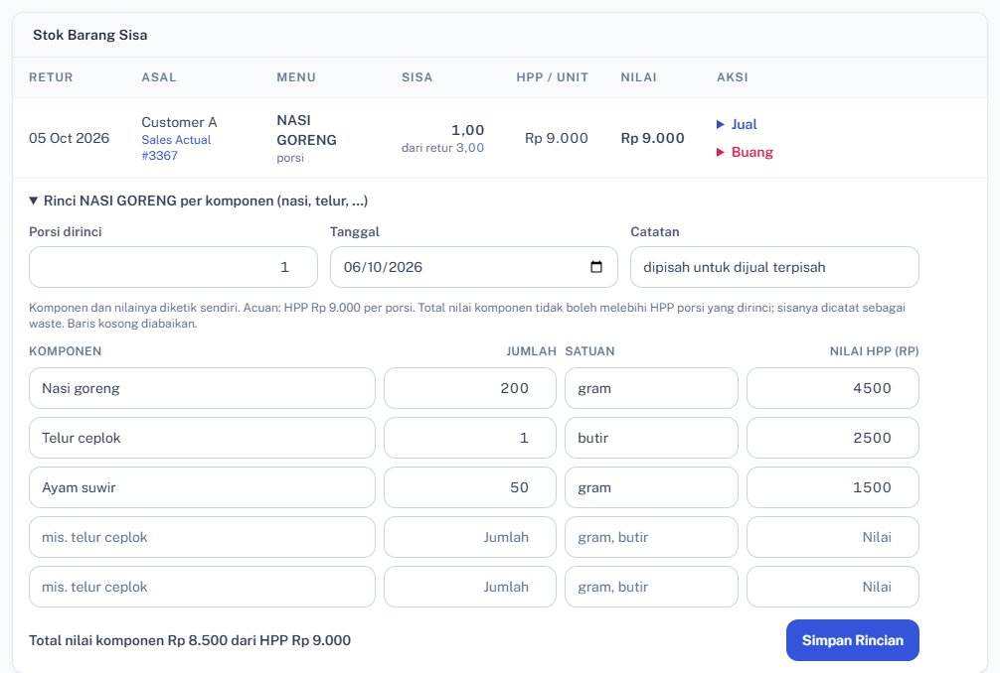
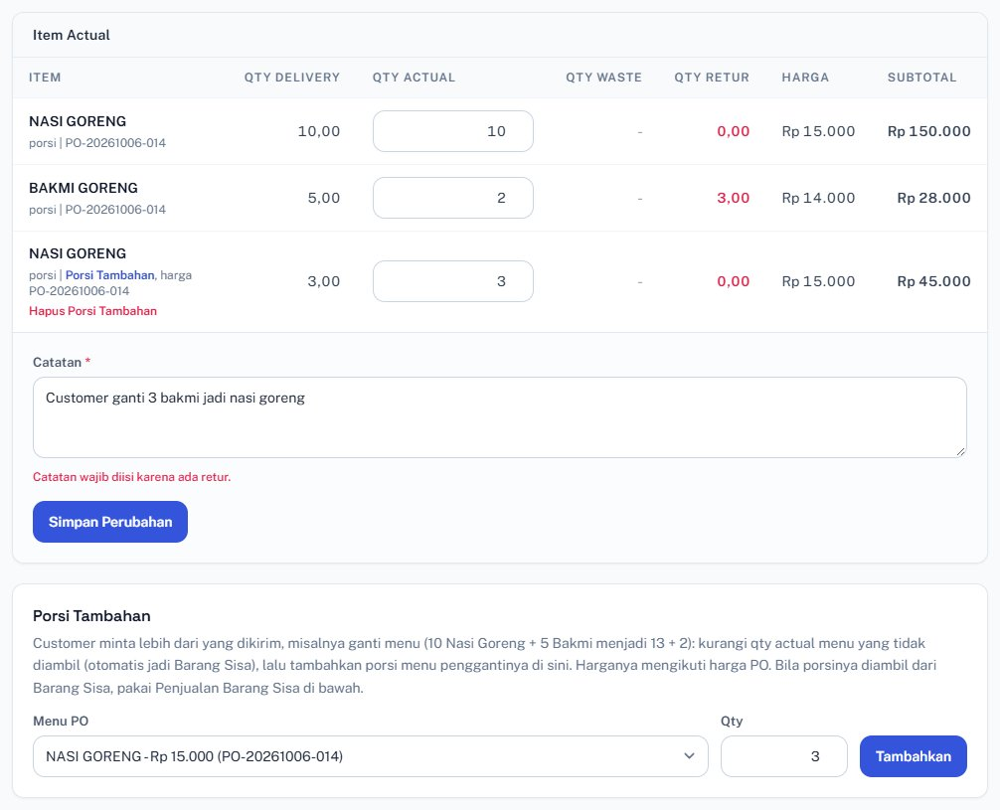

Catatan kesepakatan setelah presentasi “Dari v2 ke v3.1” · 6 Oktober 2026
Dokumen ini mencatat empat penegasan Owner atas revisi yang sudah dikerjakan, beserta cara sistem 3S ONE menjalankannya. Angka rupiah di contoh hanya ilustrasi.
1.Sumber HPP (koreksi presentasi halaman 9)
Kalimat tentang Perbandingan HPP di halaman 9 presentasi dikoreksi:
Tertulis di presentasi
Seharusnya
“Perbandingan HPP: versi resep × produksi dibandingkan dengan versi opname sebelum Owner memilih sumbernya.”
HPP di Laba Rugi dan Neraca memakai pengeluaran real: Saldo Awal + Pembelian Bahan Baku (nota dari gudang) − Sisa Stock Opname. Perbandingan HPP tetap ada sebagai alat pantau: HPP menurut resep × produksi dibandingkan dengan HPP real, supaya selisihnya terlihat dan bisa ditelusuri.
Diatur di Inventory › Pengaturan Inventory › Sumber pemakaian bahan untuk HPP, pilihan Residual opname (= pengeluaran real). Berlaku untuk Laporan Pemakaian Bahan, Laba Rugi, Neraca, dan Bahan Baku Real di Analisa HPP.
Pembelian Bahan Baku terisi otomatis dari penerimaan barang di gudang, tanpa diketik ulang oleh Accounting.
Bila HPP real jauh di atas HPP resep, ada bahan yang terpakai di luar resep (susut, hilang, atau resep perlu diperbarui). Rinciannya dibuka di Inventory › Susut Bahan.
2.Selisih opname bahan baku: Barang Hilang dan Barang Temuan
Saat sisa bahan baku dihitung fisik dan hasilnya tidak sama dengan catatan Kartu Stok:
Kurang dari catatan → Barang Hilang.
Lebih dari catatan → Barang Temuan.
Contoh: beli 1 kg ayam, dipotong 12 bagian. Potongan terakhir kecil, sehingga saat opname sisa ayam tidak bulat sesuai catatan. Kartu Stok mencatat sisa 1.000 gram, hitungan fisik 500 gram: selisih 500 gram × harga beli dicatat sebagai Barang Hilang.
Dicatat dari Inventory › Opname Bahan (hitung fisik per bahan) atau dari hitung sisa saat Tutup SPK produksi.
Di Laba Rugi tampil sebagai rincian di bawah Bahan Baku Terpakai (“termasuk Barang Hilang / Barang Temuan”), terpisah dari Kerugian Barang Rusak (barang yang ditolak saat datang).
Setiap selisih ikut dihitung di Susut Bahan dengan indikator: hijau di bawah 1%, kuning 1–10%, merah di atas 10%. Bahan yang diklik menunjukkan SPK dan masakan yang memakainya.
Catatan: nilai rupiah sisa stok untuk Laba Rugi dan Neraca diambil dari Stock Opname (per kategori), sedangkan Barang Hilang/Temuan dari Opname Bahan (per bahan). Di akhir bulan keduanya diisi.
3.Retur menjadi Barang Sisa
Contoh: customer memesan 10 nasi goreng @ Rp 15.000, hari itu 3 porsi diretur.
Customer membayar porsi yang diambil: 7 × Rp 15.000 = Rp 105.000.
3 porsi retur masuk Sales › Barang Sisa, dinilai sebesar HPP menu (misalnya HPP Rp 9.000/porsi → Rp 27.000). Selama belum terjual, nilainya adalah persediaan.
Rincian per komponen
Barang Sisa bisa dirinci oleh user menjadi komponen, misalnya nasi sekian dan telur sekian:
Komponen diketik bebas, tidak diambil dari resep, karena nasi yang sudah digoreng tidak bisa kembali menjadi bahan resep.
Nilai komponen diketik sendiri, dengan acuan HPP menu. Total nilai komponen tidak boleh melebihi HPP porsi yang dirinci; bila lebih kecil, selisihnya dicatat sebagai waste.
Boleh merinci sebagian porsi saja; sisanya tetap porsi utuh.
Komponen (contoh rincian 3 porsi, HPP Rp 27.000)
Jumlah
Satuan
Nilai HPP
Nasi goreng
600
gram
Rp 12.000
Telur ceplok
3
butir
Rp 7.500
Ayam suwir
150
gram
Rp 6.000
Total komponen
Rp 25.500
Selisih yang tidak terinci (dicatat sebagai waste)
Rp 1.500

Sales › Barang Sisa › Rinci per komponen: komponen, jumlah, satuan, dan nilai HPP diketik sendiri; totalnya dibandingkan dengan HPP porsi.
Penjualan Barang Sisa
Besoknya Barang Sisa bisa dijual ke customer mana pun sebagai Penjualan Barang Sisa, baik porsi utuh maupun per komponen sesuai yang diambil (misalnya 3 telur ke customer lain).
Harga jualnya diisi Sales. Cara bayarnya mengikuti PO customer pembeli.
Nilai HPP yang terjual keluar dari persediaan dan masuk HPP bulan terjualnya.
Edit dan waste
Rincian bisa diubah atau dibatalkan selama belum ada komponen yang dijual atau dibuang.
Porsi atau komponen yang rusak atau tidak bisa digunakan dicatat sebagai waste (alasan wajib). Nilainya masuk Laporan Waste dan rincian “Barang Sisa Dibuang” di Laba Rugi.
Barang Sisa tidak diberi umur. Yang masih ada di akhir bulan dihitung sebagai persediaan: baris Barang Sisa - Persediaan Akhir di Neraca, dan Barang Sisa Awal/Akhir di blok HPP Laba Rugi.
4.Customer mengganti isi PO
Contoh: PO 10 nasi goreng + 5 bakmi goreng, lalu besoknya customer minta menjadi 13 nasi goreng + 2 bakmi goreng. Perubahan ini diperbolehkan, dengan perlakuan Barang Sisa seperti poin 3.
Kapan berubah
Perlakuan
Sebelum dapur memasak
Admin mengubah PO (alasan perubahan wajib dan tercatat). SPK Produksi yang belum ditutup ikut menyesuaikan otomatis.
Sesudah dimasak dan dikirim
Dicatat di Sales Actual customer:
Bakmi diterima 2 dari 5 → 3 bakmi menjadi Barang Sisa.
3 nasi goreng tambahan dicatat sebagai Porsi Tambahan, ditagih dengan harga PO. Bila nasi gorengnya diambil dari stok Barang Sisa, dicatat sebagai Penjualan Barang Sisa.
SPK Produksi sudah ditutup
Menu dan jumlah di PO tidak diubah lagi (masakan sudah dibuat sesuai PO lama); penggantiannya dicatat di Sales Actual seperti baris di atas. Perubahan selain menu (penerima, alamat, jam) tetap boleh.
Tagihan setelah ganti menu (contoh harga PO)
Qty
Harga PO
Jumlah
Nasi goreng (PO)
10
Rp 15.000
Rp 150.000
Nasi goreng (Porsi Tambahan)
3
Rp 15.000
Rp 45.000
Bakmi goreng (diambil 2 dari 5)
2
Rp 14.000
Rp 28.000
Total ditagih
Rp 223.000
3 bakmi goreng masuk Barang Sisa, dinilai HPP menu
persediaan

Sales Actual: bakmi diterima 2 dari 5 (retur 3 menjadi Barang Sisa) dan Porsi Tambahan 3 nasi goreng dengan harga PO.